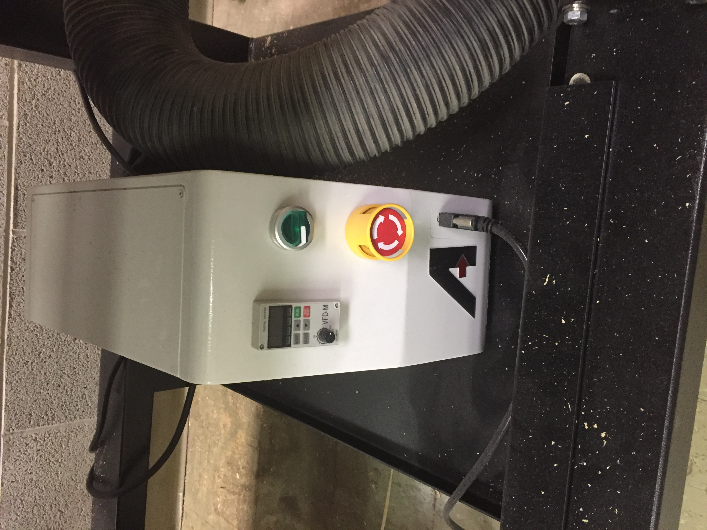

This week we are exploring what it takes to do a simple series of cuts with an Axiom CNC machine.
A CNC machine is a type of subtractive manufacturing. It uses CAM or CAD to guide where it takes material away. It moves on 3 axes (x, y, and z), allowing it to move left/right, forward/back, and up/down. It takes this material away using various bits. The gantry (first photo below) is the overhanging mechanism that that moves the bit and controls the hight of the cut. The dust collection system is like a large vacuum, removing the sawdust from the cut at the head (shown in the second picture below), with the brush head keeping the sawdust from escaping.
To start the machine, turn the power nob on the box under the machine (first picture below). Next start the dust collection system, located below and to side of the machine (second picture below). Next, assemble the collett and and collett nut, attaching them to the machine head as seen below (thrid and fourth photo). Then insert the bit and tighten. This will hold the bit in by pressure and friction.

Next, after making sure that the object you are cutting is firmly attached to the cutting table, set the origin height of your cut using the hand-held controls (first photo below) and the censor shown below (second photo). The control will also allow you to select your cut, set the x-y origin, and start/stop your cut.
Start by creating a new document in your CAD or CAM settings (I am using vcarve). Make sure to correctly add your material dementions (seen to left of photo)
Next design whatever cut you are looking to make. I, lacking all creativity, have created a series of squares.
Now select the outermost cut, and make a new tool path, in this case, a profile toolpath to cut through. Using the info sheet (seen in left of image) adjust the settings of the cut, including the bit settings. Make sure to adjust the depth of the cut to you material.
Next adjust the tab settings, this will keep cut pieces from flying off until the cut is complete. Use at least one tab as seen below. Then break them off when you are finished your cut.
Finally, preview your cut to make sure everything is correct.
Next I selected one of my other internal squares and made a pocket toolpath. Again, adjusting the settings to my needs. I did not need to update the bit settings since they were already entered them. Repeat as many times as necessary
One all of the toolpaths have been made, export the file to a thumb drive to insert into the control of the Axiom CNC machine. Begin the cut from there. My final product can be seen below.
To save time and money, we did not make the following cut, so everything that follows is a theoretical cut, with the outer extent defining the profile toolpath and my internal cuts defining the pocket cuts.
I used my love of coins as inspiration for this design. I had to choose from simple motifs, so I combined 3. First I chose to make a simple rounded cross design, similar to those found on the reverse of the first coin below. Next I incorporated an incuse wind-sail square design as seen on the second coin below. Then finally I took some liberties with a not-so-numismatic design, the fleur de lis, just because it has the flowing lines I was thinking of working with. When I say I took some liberites, I mean I took a lot, so just go with my modern reimagination of a fleur de lis.
If I had to make this in real life, I would choose some hard wood, but I wouldn't have any overhead cost. Seeing as I have no morals, I would simply steal any materials that I would need. Anything which I wasn't able to "obtain" on my own I would simply blackmail Kevin into stealing for me.
To make this design, I used Fusion 360. Like always, I created a new document and sketch, then created a circular disk.
I start a new sketch on the surface of that disk. From there I started to make my cross. I created 4 circles, one to each corner and each being half the diameter of the circle. From there I cut and removed the internal parts of the circles, leaving only the below design. I also created two offsets, one for the toolpath and one as a spacer.
Next I began to make the incuse mill-sail pattern. Though it looks quite odd here, it will look correct when I clean up my line work a bit later.
After that, I began the sides of my fleur de lis which were designed based of a fibonacci spiral which allowed me to space things out correctly. Then I used the tangent arc tool to string it all together. The below design was copied on the other side.
Then I used offset again so that my spirals can be cut using a pocket toolpath. Then I fashioned the top and bottom of my fleur de lis largely by sight, just trying to make it look nice, but I really didn't know a clear way to do it, and this really wasn't worth hours of brainstorming.
Next I cleaned up my line work as follows
Finally I made a negative extrude to create my pocket toolpaths
My Design files for week 5 can be found here.